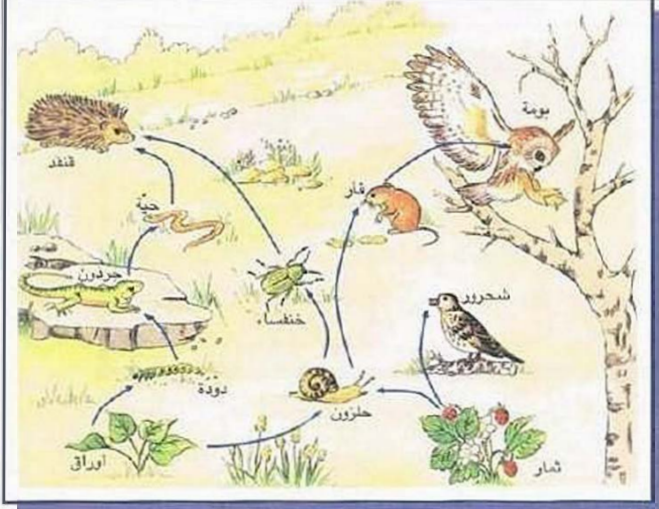
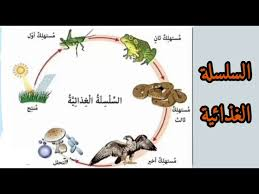

فرض تأليفي عدد 3 في علوم الحياة والأرض
المدرسة الإعدادية : الشقراطسي
المستوى : الثامنة أساسي - الأستاذة : سامية جابلي
السنة الدراسية : 2009 / 2010
التوقيت : ساعة واحدة
تعليمات عامة
- أجب بدقة على الأسئلة المطروحة
- اعتن بجودة الخط وتنظيم الإجابة
- الرسوم والبيانات يجب أن تكون واضحة ومقروءة
- انتبه إلى توزيع النقاط بين مختلف الأسئلة
التمرين الأول (12 نقاط)
الوثيقة التالية تمثل سلسلة غذائية بسيطة :

الوثيقة : سلسلة غذائية بسيطة (نبات أخضر ← حيوان عاشب ← حيوان لاحم ← جراثيم وكائنات التربة)
1. على ماذا يعتمد النبات الأخضر في تحصيل غذائه؟ 2 ن
2. هل يعتمد النبات الأخضر على كائن حي آخر في تحصيل غذائه؟ كيف نسميه إذًا؟ 2 ن
3. على ماذا يعتمد الحيوان العاشب في تحصيل غذائه؟ كيف نسميه إذًا؟ 2 ن
4. على ماذا يعتمد الحيوان اللاحم في تحصيل غذائه؟ كيف نسميه إذًا؟ 2 ن
5. ما هو دور جراثيم وكائنات التربة في السلسلة الغذائية؟ 2 ن
6. ما هو مفهوم السلسلة الغذائية؟ وكم من مستوى غذائي تتركب؟ 2 ن
التمرين الثاني (8 نقاط)
تقوم الدجاجة بحضن البيض الملقح لمدة 21 يومًا وفي نهاية الحضن تخرج الفراخ من البيض.
1. تغير كتلة الألاح والمح والجنين أثناء الحضن
تابع بعض الأخصائيون تغير كتلة كل من الألاح و المح و الجنين أثناء الحضن وجسّموا النتائج على شكل رسوم بيانية كما تبينه الوثيقة التالية :
الوثيقة : منحنيات تغير كتلة الألاح والمح والجنين طيلة مدة الحضن (21 يومًا)
أ- حلّل المنحنيين (منحنى الألاح ومنحنى المح) ثم منحنى الجنين. 2 ن
ب- ماذا تستنتج؟ 1 ن
2. مصير القشرة الكلسية أثناء الحضن
للتعرف إلى مصير القشرة أثناء الحضن قمنا بوزن القشرة الكلسية قبل الحضن فكانت 5 غ ثم قمنا بوزنها بعد الانفقاس فكانت 3 غ.
أ- ما هو سبب تقلّص كتلة القشرة؟ حدد دور القشرة في تكوين الجنين. 1 ن
ب- ما هي شروط التفقيس؟ 2 ن
3. اربط بسهم بين كل جزء من أجزاء البيضة ومصيرها
أكمل الجدول التالي بوضع الحرف المناسب للمصير أمام كل جزء:
| جزء البيضة | ←→ | المصير (اختر الحرف المناسب) |
|---|---|---|
| المح | ⟷ | |
| الجنين | ⟷ | |
| الألاح | ⟷ | |
| الفرخ | ⟷ | |
| القشرة الكلسية | ⟷ |
المصائر المتاحة:
- (أ) تتناقص كتلتها لتكوين عظام الجنين
- (ب) تقل كتلته لبناء مختلف أنسجة الجنين
- (ج) ينمو ليتحول إلى فرخ كامل
- (د) الناتج النهائي لعملية الحضن والتفقيس
2 ن
الإصلاح النموذجي المفصّل
التمرين الأول (12 نقاط) : السلسلة الغذائية
وثيقة تفصيلية للسلسلة الغذائية

الوثيقة : السلسلة الغذائية مع تحديد المستويات الغذائية (منتج ← مستهلك أول ← مستهلك ثانٍ ← محللات)
1. اعتماد النبات الأخضر في تحصيل غذائه 2 ن
الإجابة الصحيحة:
يعتمد النبات الأخضر في تحصيل غذائه على:
- الماء والأملاح المعدنية التي يمتصها من التربة بواسطة جذوره.
- غاز ثاني أكسيد الكربون (CO₂) الذي يأخذه من الهواء عبر مسامات الأوراق (الثغور).
- الضوء (الطاقة الشمسية) كمصدر للطاقة اللازمة لعملية التركيب الضوئي.
- اليخضور (الكلوروفيل) الموجود في الصانعات الخضراء داخل خلايا الأوراق.
إذًا، النبات الأخضر يصنع غذاءه بنفسه عن طريق عملية التركيب الضوئي وفق المعادلة:
ماء + أملاح معدنية + CO₂ ← (في وجود الضوء واليخضور) ← مواد عضوية (سكريات) + O₂
التنقيط: 1 نقطة لذكر الماء والأملاح + 0.5 نقطة لذكر CO₂ + 0.5 نقطة لذكر الضوء واليخضور. تُقبل الصياغات المختلفة شريطة وضوح المعنى العلمي.
2. هل يعتمد النبات الأخضر على كائن حي آخر؟ كيف نسميه؟ 2 ن
الإجابة الصحيحة:
لا، النبات الأخضر لا يعتمد على كائن حي آخر في تحصيل غذائه. فهو قادر على إنتاج المادة العضوية (الغذاء) انطلاقًا من مواد معدنية بسيطة (ماء، أملاح، CO₂) بفضل الطاقة الضوئية.
يُسمّى النبات الأخضر كائنًا منتجًا (Producteur) أو كائنًا ذاتي التغذية (Autotrophe).
التنقيط: 1 نقطة للإجابة بـ "لا" مع التعليل + 1 نقطة للمصطلح الصحيح (منتج/ذاتي التغذية).
3. اعتماد الحيوان العاشب في تحصيل غذائه وتسميته 2 ن
الإجابة الصحيحة:
الحيوان العاشب يعتمد على النباتات الخضراء في تحصيل غذائه، فهو يستهلك المادة العضوية التي أنتجها النبات (أوراق، ثمار، بذور، أعشاب...).
يُسمّى الحيوان العاشب مستهلكًا من الدرجة الأولى (Consommateur primaire) أو كائنًا غير ذاتي التغذية (Hétérotrophe)، لأنه لا يستطيع إنتاج غذائه بنفسه بل يعتمد على غيره.
التنقيط: 1 نقطة لذكر اعتماده على النباتات + 1 نقطة للمصطلح الصحيح (مستهلك درجة أولى).
4. اعتماد الحيوان اللاحم في تحصيل غذائه وتسميته 2 ن
الإجابة الصحيحة:
الحيوان اللاحم يعتمد على الحيوانات العاشبة (أو غيرها من اللواحم) في تحصيل غذائه، فهو يتغذى على لحوم الكائنات الأخرى التي تستهلك بدورها النباتات أو الحيوانات.
يُسمّى الحيوان اللاحم مستهلكًا من الدرجة الثانية (Consommateur secondaire) إذا تغذى على العواشب، أو مستهلكًا من الدرجة الثالثة إذا تغذى على لواحم أخرى. وهو أيضًا كائن غير ذاتي التغذية (Hétérotrophe).
التنقيط: 1 نقطة لذكر اعتماده على العواشب/الحيوانات + 1 نقطة للمصطلح الصحيح (مستهلك درجة ثانية أو أعلى).
5. دور جراثيم وكائنات التربة في السلسلة الغذائية 2 ن
الإجابة الصحيحة:
تلعب جراثيم وكائنات التربة (البكتيريا، الفطريات المجهرية، ديدان الأرض...) دور المحلّلات (Décomposeurs) في السلسلة الغذائية. حيث تقوم بـ:
- تحليل المادة العضوية الميتة: تحويل بقايا الكائنات الحية (جيف الحيوانات، فضلاتها، أوراق النباتات الميتة) إلى مواد معدنية بسيطة (أملاح، ماء، CO₂) تعود إلى التربة والهواء.
- إعادة تدوير المغذيات: إرجاع الأملاح المعدنية إلى التربة لتستخدمها النباتات من جديد في التركيب الضوئي، مما يضمن استمرار دورة المادة في النظام البيئي.
- تنظيف البيئة: التخلص من الجيف والفضلات التي قد تلوث البيئة وتسبب الأمراض.
إذًا، فهي تشكل حلقة أساسية وختامية في السلسلة الغذائية، تضمن إغلاق دورة المادة في الطبيعة.
التنقيط: 1 نقطة لذكر دور التحليل + 1 نقطة لشرح إعادة المغذيات إلى التربة (المحللات).
6. مفهوم السلسلة الغذائية وعدد مستوياتها 2 ن
الإجابة الصحيحة:
السلسلة الغذائية هي سلسلة من الكائنات الحية المترابطة فيما بينها بعلاقات غذائية، حيث يتغذى كل كائن على الذي يسبقه ويشكل بدوره غذاءً للذي يليه. وهي تمثل مسار انتقال المادة والطاقة في النظام البيئي.
تتركب السلسلة الغذائية النموذجية من 3 إلى 4 مستويات غذائية:
- المستوى الأول: المنتجون (النباتات الخضراء).
- المستوى الثاني: المستهلكون من الدرجة الأولى (الحيوانات العاشبة).
- المستوى الثالث: المستهلكون من الدرجة الثانية (الحيوانات اللاحمة التي تأكل العواشب).
- المستوى الرابع (إن وجد): المستهلكون من الدرجة الثالثة (اللواحم العليا).
- المحللات: تعمل على جميع المستويات لتحليل المادة الميتة.
التنقيط: 1 نقطة لتعريف السلسلة الغذائية + 1 نقطة لذكر عدد المستويات (3-4) مع شرحها.
التمرين الثاني (8 نقاط) : الحضن وتكوين الفرخ
1. أ- تحليل المنحنيات 2 ن
الإجابة الصحيحة:
تحليل منحنى الألاح (البياض):
ينطلق منحنى الألاح من قيمة مرتفعة (حوالي 30 غ تقريبًا) عند بداية الحضن (اليوم 0)، ثم يتناقص تدريجيًا وباستمرار طيلة فترة الحضن (21 يومًا) ليصل إلى قيمة منخفضة جدًا تقارب الصفر عند نهاية الحضن. هذا الانخفاض يعكس استهلاك الجنين لمكونات الألاح (بروتينات وماء) لبناء أنسجته وأعضائه المختلفة. يكون الانخفاض بطيئًا نسبيًا في البداية ثم يتسارع تدريجيًا مع تقدم نمو الجنين.
تحليل منحنى المح (الصفار):
ينطلق منحنى المح من قيمة مرتفعة (حوالي 18-20 غ) عند بداية الحضن، ثم يتناقص هو الآخر تدريجيًا ولكن بوتيرة أبطأ نسبيًا مقارنة بالألاح في الأيام الأولى. يستمر الانخفاض حتى نهاية الحضن حيث تبقى كمية قليلة من المح (حوالي 5 غ) تُستهلك في الأيام الأخيرة أو تبقى كمدخر طاقي للفرخ بعد الفقس. المح غني بالدهون والطاقة التي يحتاجها الجنين لنموه.
تحليل منحنى الجنين:
ينطلق منحنى الجنين من قيمة منخفضة جدًا (تقارب الصفر) عند بداية الحضن (القرص الجنيني)، ثم يتزايد تدريجيًا وباستمرار طيلة فترة الحضن. يبدأ النمو بطيئًا في الأيام الأولى (مرحلة التمايز الخلوي)، ثم يتسارع بشكل كبير في الأيام الأخيرة (خاصة من اليوم 14 إلى اليوم 21) ليصل إلى أقصى قيمة له (حوالي 35-40 غ) عند نهاية الحضن، وهي كتلة الفرخ الكامل الجاهز للفقس. هذا يعكس نمو الجنين وتطوره على حساب المواد المخزنة في الألاح والمح.
التنقيط: 0.75 نقطة لتحليل منحنى الألاح + 0.75 نقطة لتحليل منحنى المح + 0.5 نقطة لتحليل منحنى الجنين. يجب أن يُبرز التلميذ اتجاه التغير (تناقص/تزايد) والعلاقة بين المنحنيات.
1. ب- الاستنتاج 1 ن
الإجابة الصحيحة:
الاستنتاج العام: خلال فترة الحضن (21 يومًا)، يستهلك الجنين المواد الغذائية المخزنة في البيضة لضمان نموه وتطوره. فـ الألاح (البياض) والمح (الصفار) يمثلان مصدر الغذاء والطاقة للجنين، حيث تتناقص كتلتهما تدريجيًا مع تقدم الحضن. وفي المقابل، تتزايد كتلة الجنين تدريجيًا حتى يتحول إلى فرخ كامل قادر على الفقس. إذًا، هناك علاقة عكسية بين تناقص كتلة المدخرات الغذائية (الألاح والمح) وتزايد كتلة الجنين، مما يؤكد أن نمو الجنين يتم على حساب المواد المخزنة في البيضة.
التنقيط: 1 نقطة كاملة إذا ذكر التلميذ العلاقة العكسية بين تناقص المدخرات وتزايد كتلة الجنين، وأن الألاح والمح هما مصدر غذاء الجنين.
2. أ- سبب تقلص كتلة القشرة ودورها 1 ن
الإجابة الصحيحة:
سبب تقلّص كتلة القشرة من 5 غ إلى 3 غ:
يعود انخفاض كتلة القشرة الكلسية أثناء الحضن إلى استخدام الجنين لأملاح الكالسيوم الموجودة في القشرة. فالجنين يمتص الكالسيوم (كربونات الكالسيوم CaCO₃) عبر الأوعية الدموية للغشاء القشري المحيط به، ويستخدمه في بناء هيكله العظمي (العظام والمنقار). هذا الامتصاص التدريجي يؤدي إلى ترقق القشرة ونقصان وزنها.
دور القشرة الكلسية في تكوين الجنين:
- مصدر أساسي للكالسيوم: تزود الجنين بأملاح الكالسيوم الضرورية لتكلس العظام وتكوين الهيكل العظمي والمنقار.
- حماية ميكانيكية: تشكل غلافًا صلبًا يحمي الجنين من الصدمات والضغوط الخارجية طيلة فترة الحضن.
- المسامية والتهوئة: تحتوي على مسامات دقيقة تسمح بتبادل الغازات التنفسية (دخول O₂ وخروج CO₂).
التنقيط: 0.5 نقطة لسبب تقلص الكتلة + 0.5 نقطة لدور القشرة (تقبل أي إجابة تذكر الكالسيوم والحماية).
2. ب- شروط التفقيس 2 ن
الإجابة الصحيحة:
شروط التفقيس (الظروف الملائمة للتفريخ) هي:
- الحرارة المناسبة: يجب توفير درجة حرارة ثابتة حوالي 37° إلى 40° مئوية (المثلى 37.5° - 38°م). الحرارة المنخفضة تمنع نمو الجنين، والحرارة المرتفعة تقتله. في الحضانة الطبيعية، توفر الدجاجة هذه الحرارة بجلوسها على البيض.
- التهوئة (تبادل الغازات): ضرورة وجود تهوئة مناسبة تسمح بدخول الأكسجين (O₂) اللازم لتنفس الجنين وخروج ثاني أكسيد الكربون (CO₂) الناتج عن تنفسه، وذلك عبر مسامات القشرة الكلسية. طلاء البيضة بالدهن يسد المسامات ويمنع التهوئة مما يؤدي إلى اختناق الجنين.
- الرطوبة الكافية: يجب توفير رطوبة معتدلة في وسط الحضن، لأن الجفاف الشديد يؤدي إلى تبخر الماء من داخل البيضة وجفاف الجنين، بينما الرطوبة الزائدة قد تعيق التهوئة. الرطوبة المناسبة تحافظ على المحتوى المائي للبيضة.
- تقليب البيض يوميًا: يجب تقليب البيض بانتظام (مرة أو مرتين يوميًا) لمنع التصاق الجنين بالقشرة من جهة واحدة، ولضمان توزيع الحرارة بشكل متساوٍ على جميع أجزاء البيضة، مما يسمح بنمو سليم ومتناسق للجنين.
التنقيط: 0.5 نقطة لكل شرط صحيح مع شرحه (المجموع 2 نقطة على 4 شروط). تُقبل الإجابات المختصرة إذا كانت واضحة.
3. الربط بين أجزاء البيضة ومصيرها 2 ن
الإجابة الصحيحة (الربط بواسطة الأسهم):
| جزء البيضة | السهم | المصير |
|---|---|---|
| المح | ←→ | (ب) تقل كتلته لبناء مختلف أنسجة الجنين (مصدر للدهون والطاقة والبروتينات) |
| الجنين | ←→ | (ج) ينمو ليتحول إلى فرخ كامل (يتطور من قرص جنيني إلى كائن مكتمل) |
| الألاح | ←→ | (ب) تقل كتلته لبناء مختلف أنسجة الجنين (مصدر للبروتينات والماء لبناء العضلات والأنسجة) |
| الفرخ | ←→ | (د) الناتج النهائي لعملية الحضن والتفقيس (النتيجة النهائية بعد 21 يومًا من الحضن) |
| القشرة الكلسية | ←→ | (أ) تتناقص كتلتها لتكوين عظام الجنين (مصدر الكالسيوم لبناء الهيكل العظمي والمنقار) |
ملاحظة: المح والألاح كلاهما يتناقص لبناء أنسجة الجنين (الحرف ب). أما القشرة فتختص بتوفير الكالسيوم للعظام (الحرف أ). الجنين ينمو ليتحول إلى فرخ (الحرف ج)، والفرخ هو الناتج النهائي (الحرف د).
التنقيط: 0.5 نقطة لكل ربط صحيح (المجموع 2 نقطة على 4 أربطة، باعتبار المح والألاح معًا 0.5 نقطة).
ملاحظة عامة: هذا التصحيح إرشادي وتفصيلي، وقد تختلف إجابات التلاميذ مع الحفاظ على المعايير الأساسية. المهم هو الفهم العميق للسؤال، والتحليل المنطقي، واستخدام لغة علمية سليمة، وتقديم حجج متماسكة مدعومة بالمعطيات العلمية المناسبة. يجب مراعاة الدقة في المصطلحات العلمية (منتج، مستهلك، محلل، ذاتي التغذية، غير ذاتي التغذية، التركيب الضوئي، الحضن، التفقيس...) وجودة التعبير ووضوح الخط.